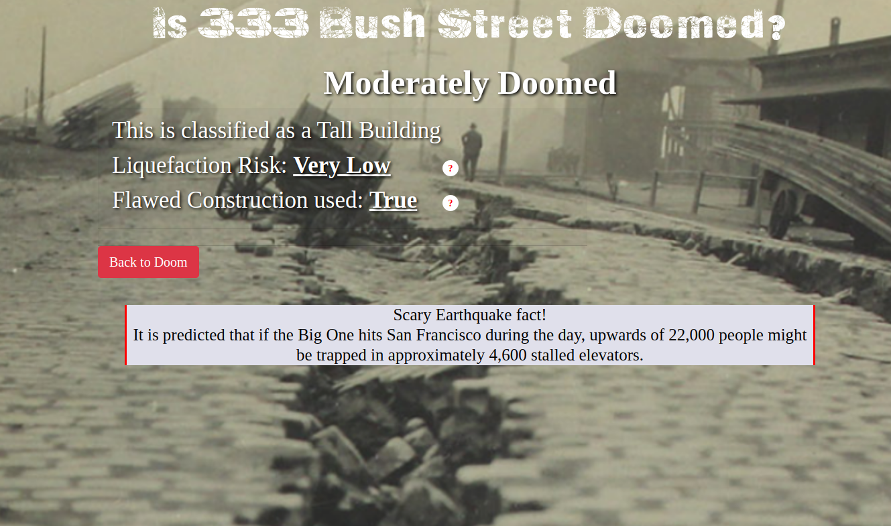
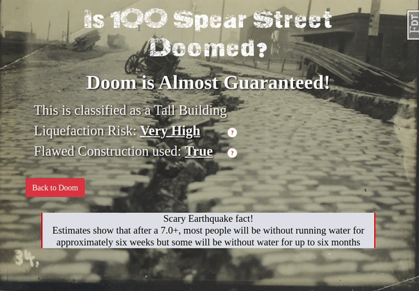

Tech Stack: Python, Javascript, HTML, CSS, PostgreSQL, SQLAlchemy APIs: Google Maps JavaScript, Google Maps Geocoding
Doom Mapper is a full stack Web application that allows users to check if a building in San Francisco is in danger of collapse in a 7.0 or higher earthquake. The application has 93% test coverage using Python unittest. This project was made at Hackbright Academy in San Francisco over four weeks in February 2020.
Search for an address in San Francisco to learn about the seismic risks facing it. If the building is in the database as soft story building or a skyscraper, it will return info about the liquefaction risk, any known flawed construction used, and if the building has been seismically retrofitted.
Not sure what liquefaction is? Mouseover to learn about the different doom categories and why they are concerning
Red and blue markers indicate different types of buildings and the grey layer indicates the liquefaction zone. They can be toggled on and off.
Mouseover the red or blue markers to see the address or name of the building and click to view the buildings information page. Doom score is calculated based on the known risk factors.